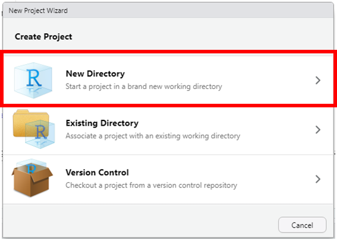
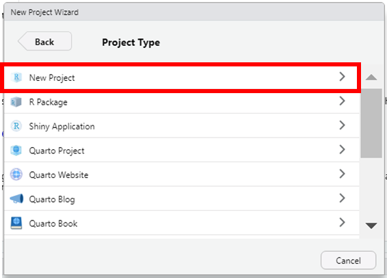
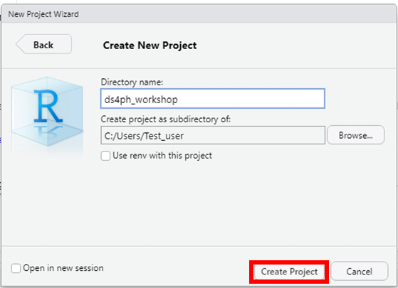
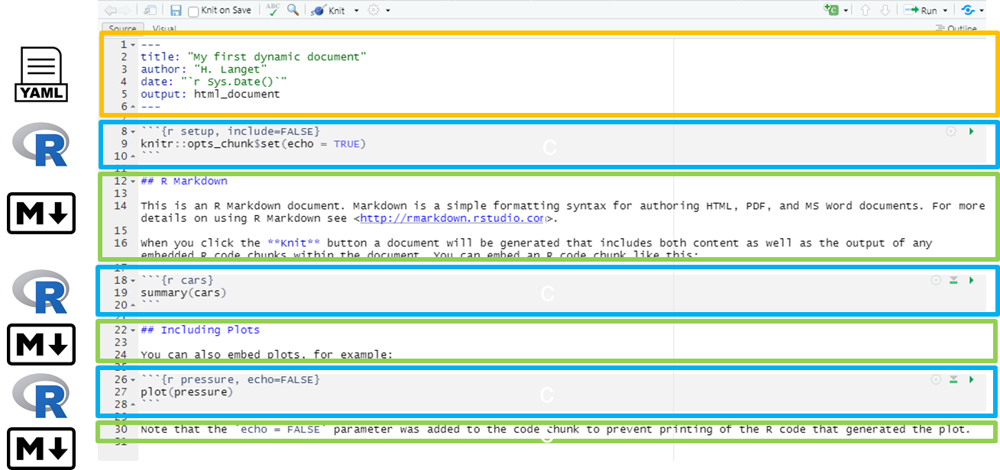
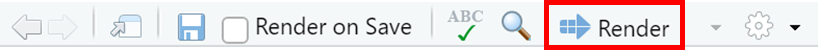

1 + 1[1] 2Please review the following sections for instructions on installation steps:
Open RStudio
By default RStudio displays four rectangle panes.
If your RStudio displays only one left pane it is because you have no scripts open yet.
The R Console, by default the left or lower-left pane in R Studio, is the home of the R “engine”. This is where the commands are actually run and non-graphic outputs and error/warning messages appear. You can directly enter and run commands in the R Console, but realize that these commands are not saved as they are when running commands from a script.
This pane is similar to the Stata Command and the Results windows.
This pane, by default in the upper-left, is space to edit and run your scripts, including the RMarkdown outbreak and survey templates. This pane can also display datasets (data frames) for viewing.
This pane is similar to the Stata Do-file and Data Editor windows.
This pane, by default the upper-right, is most often used to see brief summaries of objects in the R Environment in the current session. These objects could include imported, modified, or created datasets, parameters you have defined (e.g. a specific epi week for the analysis), or vectors or lists you have defined during analysis (e.g. names of regions). Click on the arrow next to a dataframe name to see its variables.
This pane is similar to the Stata Variables Manager window.
The lower-right pane includes several tabs:
This pane contains the Stata equivalents of the Plots Manager and Project Manager windows.
To first get set up, I highly recommend changing the following setting
Tools > Global Options (or Cmd + , on macOS)
Under the General tab:
For workspace
Uncheck restore .RData into workspace at startup
Save workspace to .RData on exit : “Never”
For History
Uncheck “Always save history (even when not saving .RData)
Uncheck “Remove duplicate entries in history”In RStudio, you can create a new project by selecting File > New Project…

Select New Directory

Select New Project

Select a location to save the new R project (this creates a new folder).

Save all relevant data files into this new R project folder.
We will use this project for the duration of the workshop.
While it makes sense to use Quarto going forward, there are still a lot of resources written for and in R Markdown. For this reason we provide the R Markdown equivalents for this section in Appendix.
In RStudio, you can create a new Quarto document by selecting File > New File > Quarto Document…

When you create a new Quarto document, RStudio tries to be helpful by allowing you to select a template which explains the different section of an R Markdown script. R Studio will enable you select options to pick from to generate a template Quarto document to start from.
The title and the author names are not important. If the output document type you want is not one of these, do not worry - you can just pick any one and change it later.
Let us select HTML to create an html document.
Click on create to open up a new Quarto (.Qmd) document.

The RStudio Visual Editor is quite new and has features that improve your writing experience. Working in the Visual Editor feels a bit like working in a Google Doc.
Here’s an example showing the same file in the original Source Editor with content in markdown format and in the Visual Editor with content that looks more like it will appear in a live site. You can switch freely between these modes.
An R Markdown document can be edited in RStudio.
There are three basic components to a Quarto document, similar to the components of a R Markdown document:

The very top of the document consists of a (YAML) header surrounded by — lines. Here you may want to edit the title of your document. The other settings in the header define the default document type produced (Microsoft Word) when the RMarkdown is “knit”. the information intended to produce an html output.
In WHITE background areas, any text will appear as regular text in the final report. Can have formatting such as headings, italics, bold, numbers, and bullets. See the second page of this RMarkdown cheatsheet for more detail. Can display parameters derived from your data via in-line code (such as epi week of the outbreak peak, as in the example above).
In gray background “code chunks”, RMarkdown is running R commands. These commands perform data processing and cleaning steps, or could produce visual outputs in the document.
When you click the Render button a document will be generated that includes both content and the output of embedded code.
 ## Code options
You can embed code like this:
1 + 1[1] 2You can add options to executable code like this
[1] 4The echo: false option disables the printing of code (only output is displayed).